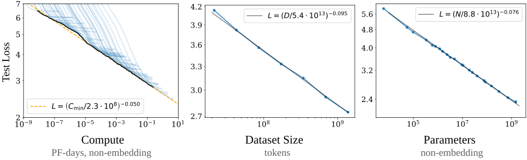
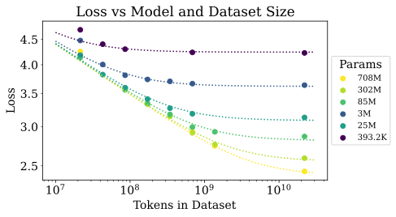
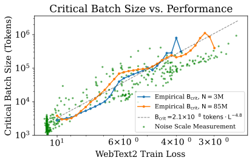
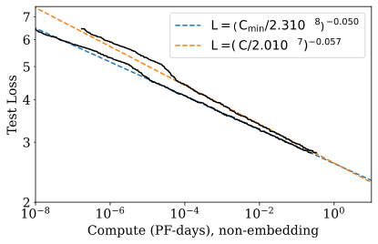
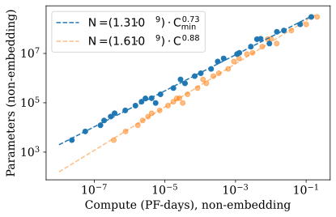
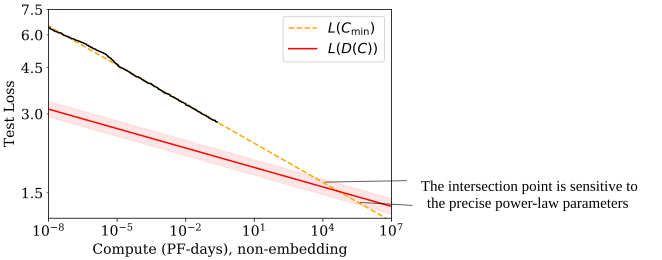

Kaplan Scaling Laws：为什么语言模型训练第一次变成了“可外推的工程问题”
论文：Jared Kaplan et al., Scaling Laws for Neural Language Models，2020。
类型：A · 原始经验方法论文。
一句话定位：这篇论文真正改变的不是 Transformer 结构，而是大模型研发的决策方式：模型参数量 (N)、数据量 (D)、训练计算量 (C) 与最终 language-model loss 之间，在实验区间内呈现出稳定、可拟合的幂律，于是“训练多大模型、要多少数据、给多少算力”第一次可以被当成一个经验可预测的资源分配问题。
这篇论文必须和下一篇 Chinchilla 连起来读。
原因是它同时包含两层贡献：
一层后来被反复验证、并真正奠定现代大模型工程基础；
一层关于 固定 compute 下应该怎样分配模型参数和训练 token 的具体结论，后来被 Chinchilla 明确修正。
因此最容易犯的错误有两个：
“Kaplan 已经过时，所以不用读。”
以及：
“Kaplan 的 scaling law 就是今天仍应照搬的 compute-optimal 配方。”
这两句话都不对。
真正应该保留的是：
Kaplan 2020
├─ 保留下来的核心：
│ ├─ loss 随 N / D / C 呈稳定经验幂律
│ ├─ 小规模实验可以用于大规模外推
│ ├─ 数据瓶颈与模型瓶颈可以分开研究
│ ├─ 大模型具有更高 sample efficiency
│ └─ scaling law 可以参与真实训练规划
│
└─ 后来被修正的部分：
└─ 固定 compute 时，应该把大部分新增算力用于增大 N，
而只缓慢增加训练 token
↓
Chinchilla 2022 重新实验
↓
N 与 D 应更接近同步扩展
如果这一层历史关系没有建立，后面读 Llama 3 的 IsoFLOPs、Qwen2.5 的 hyperparameter scaling，都会只剩“他们画了一堆曲线”。
阅读导航
这篇文章不要求先懂 Chinchilla，但建议已经知道：
next-token cross entropy；
Transformer 基本结构；
Adam / batch / training step 的含义；
log-log 坐标；
幂函数与指数。
站内相关：
读完后再进入：
A010 · Chinchilla / Training Compute-Optimal Large Language Models
本文重点解决：
Scaling law 到底在预测什么？
(N,D,C,B,S,L) 分别是什么，为什么经常被混淆？
为什么 log-log 图上近似直线就意味着 power law？
(L(N))、(L(D))、(L(C)) 为什么必须在“另外两个资源不成为瓶颈”时才有意义？
小小的指数 (0.076)、(0.095) 为什么仍然重要？
Kaplan 的联合 (L(N,D)) 为什么是经验 ansatz，而不是第一性定理？
“(D\propto N^{0.74})”到底是什么意思，为什么它不是 Chinchilla 问的 compute-optimal token ratio？
(C\approx6NBS) 从哪来？
Critical Batch Size 为什么也会进入 compute-efficient training？
为什么 Kaplan 得到 (N_{\rm opt}\propto C^{0.73})？
为什么这会推出“模型做得更大、提前停训”？
Kaplan 自己为什么已经意识到 scaling law 必然会失效？
Chinchilla 后来到底修正的是哪一层？
Llama 3 和 Qwen2.5 现在怎样继续使用 scaling-law 思想？
1. 这篇论文真正面对的工程问题是什么？
假设你现在有一笔训练预算。
你可以把新增资源花在：
更大的模型；
更多训练数据；
更多 training steps；
更大的 batch；
更长训练时间。
最简单的直觉是：
模型越大越好。
但这不够。
因为固定 compute 下，变量彼此耦合。
比如：
模型做大 4×
但训练总 FLOPs 不变
↓
每个 token 变贵
↓
能够处理的 token 数下降
↓
模型可能“更有容量但训练不足”
反过来：
模型很小
把所有算力用于看更多 token
↓
优化很充分
↓
但最终受模型容量限制
所以真正问题是：
这就是 scaling law 从“观察规律”走向“训练规划”的入口。
2. 先把所有符号钉死：Scaling Law 最容易混淆的就是“数据量”
Kaplan 论文中常见变量：
符号 |
含义 |
最容易混淆的地方 |
|---|---|---|
(N) |
non-embedding trainable parameters |
不一定等于今天报告的 total parameters |
(D) |
dataset size / data tokens |
与训练中累计处理 token 数的语境要区分 |
(B) |
batch 中处理的 token 数 |
不是 sequence count |
(S) |
optimizer update steps |
不是 token 数 |
(C) |
training FLOPs |
不是 GPU 峰值算力，也不是 wall-clock time |
(C_{\min}) |
调整 batch inefficiency 后的最小有效 compute |
是经验归一化量 |
(L) |
test negative log-likelihood |
论文主要优化对象 |
(B_{\rm crit}) |
critical batch size |
随 training state / loss 变化 |
训练过程中累计处理 token 数可粗略写成：
但“独特语料池大小”和“累计训练 token 数”并不总是同一个概念。
如果训练多个 epoch：
后面读 Chinchilla 时尤其要注意：它讨论的 (D) 更直接指本次训练总共处理多少 tokens。
3. 下层仍然是普通语言模型，上层研究对象变成了“训练运行”
底层模型没有神秘之处。
输入：
自回归 likelihood：
training loss：
但这篇论文研究的“一个样本”不再只是一个文本 sequence。
更高一层的实验对象是：
也就是：
给定一次训练 run 的规模配置，最终 loss 会怎样？
整个方法可以抽象成：
flowchart TD
A["Choose N / D / B / S"] --> B["Train autoregressive LM"]
B --> C["Measure train/test loss curves"]
C --> D["Control which resource is the bottleneck"]
D --> E["Fit empirical power laws"]
E --> F["Extrapolate to larger scale"]
F --> G["Training-plan decisions"]
因此 scaling law 不是新网络层。
它是：
训练系统之上的经验性能模型。
4. 原论文 Figure 1：最重要的发现是“很多数量级仍近似直线”

原论文核心总览图。论文把模型参数量、数据规模和训练 compute 与 test loss 放到 log-log 坐标下，观察到跨多个数量级的近似 power-law 关系。它支持“规模变化具有可预测性”，但不证明这些直线可以无限外推。
这张图的第一性原理读法不是：
“有三条线。”
而是：
当一个关系在 log-log 坐标上接近直线，我们可以用非常少的参数描述跨数量级变化。
5. 为什么 log-log 直线意味着 power law？
假设：
其中 (X) 可以是：
(N)；
(D)；
(C)。
两边取 log：
定义：
则：
这就是直线：
斜率：
所以：
log-log 图上出现稳定直线，本质上是在说资源扩大一个比例，loss 改善也近似遵循稳定比例关系。
6. 为什么 power law 对工程特别有用？
假设：
模型增大：
则：
只需要知道：
当前 scale；
放大倍数 (q)；
指数 (\alpha)；
就能估计收益。
例如：
参数量翻倍：
那么：
即 loss 大约变为原来的 94.9%。
也就是相对下降约：
注意：
这不是 accuracy +5.1 个百分点。
如果原 NLL：
那么粗略：
perplexity：
于是：
小指数在跨很多个数量级以后仍然会产生巨大累计差异。
7. 三条最著名的单资源 scaling law
Kaplan 报告：
7.1 参数受限
当：
数据足够；
训练足够；
主要瓶颈是模型容量；
经验上：
其中：
7.2 数据受限
当：
模型足够大；
用有限数据训练并合理 early stop；
主要瓶颈是数据；
经验上：
其中：
7.3 Compute 受限
当：
数据足够；
模型大小合理；
batch 也被调整到更有效率的工作区；
论文写：
其中：
这三条关系最容易被错误地摆成同一层“万能公式”。
真正前提是：
每一条单变量 law 都要求另外两个资源不要先成为主瓶颈。
8. 为什么控制瓶颈如此重要？
假设你想测：
如果数据集只有很少 token，那么模型增大以后，性能可能不再改善。
这不代表：
model scaling law 失效。
可能只是：
先成为瓶颈。
同理，测：
时，如果模型太小，无论加多少数据，最终 loss 都会被模型 capacity floor 卡住。
所以实验逻辑必须是：
想研究 N
→ 尽量让 D 和 training 足够
想研究 D
→ 尽量让 N 足够大
想研究 C
→ 同时优化 N / batch / steps allocation
这也是为什么真正的 scaling-law 工作需要很多训练 run，而不是画一条现成模型 leaderboard 拟合直线。
9. 模型“形状”为什么不是第一主变量？
Kaplan 做了一个非常有影响力的观察：
在合理范围内，当 non-embedding parameter count (N) 固定时，深度、宽度、head 数等 shape 改变，对 loss 的影响远小于 scale 本身。
注意这不是说 architecture 不重要。
更准确地说：
在论文测试的 Transformer family 与 shape 范围内，参数总规模比具体 depth/width aspect ratio 更能解释 performance trend。
这让大规模实验可以把：
作为一个相对稳定的一维 scale coordinate。
否则每变一次模型深宽，就必须重新定义 scaling law。
10. 这里为什么使用 non-embedding parameters？
词表 embedding 参数：
会强烈受到：
vocabulary size；
tokenizer；
embedding tying；
影响。
但它们并不总是以和 Transformer block 内矩阵相同的方式贡献 compute/capacity。
因此 Kaplan 的 (N) 主要采用：
non-embedding parameter count。
这也是为什么不能把论文里的：
常数直接搬到今天任意 tokenizer/model family。
scale exponent 比绝对 normalization constant 更具有可迁移解释价值。
11. 数据瓶颈：模型和数据不是两个可以独立无限扩展的旋钮
如果：
但：
固定，最终会过度受限于数据。
如果：
但：
固定，最终受限于容量。
所以论文需要一个 joint function：
原论文核心图：

原论文联合 (N,D) 实验的一部分。它的意义是：模型大小和数据大小共同决定最终 loss，并存在可预测的数据瓶颈边界。
12. Kaplan 的 (L(N,D)) 从哪里来？不是严格推导，是 empirical ansatz
论文提出：
这个公式很容易被过度神化。
它不是从 Transformer dynamics 唯一推导出的“自然定律”。
它是一个经验函数形式，设计时满足几个合理边界。
当数据无限大
第二项消失：
所以：
恢复 (L(N))。
当模型无限大
第一项消失：
恢复 (L(D))。
所以它至少保证两端行为一致。
真正可信度来自：
与实验数据拟合得好，而不是因为公式看起来漂亮。
13. (D\propto N^{0.74}) 到底在回答什么？
从联合函数看，有限数据惩罚大致由一个无量纲比例控制：
联合拟合中：
所以：
要保持类似程度的数据瓶颈：
例如模型扩大：
数据大约需要扩大：
于是论文总结成：
模型 8×，大约 5× 数据可以维持类似的 overfitting penalty。
14. 这绝对不是“compute-optimal tokens 应该按 (N^{0.74}) 增长”
这是理解 Kaplan → Chinchilla 最关键的分界。
刚才的：
回答：
为了不让有限数据瓶颈明显恶化，数据规模应怎样随模型容量扩展？
它不是在解：
后一个问题才是 Chinchilla 的主问题。
因此：
Kaplan joint N-D law
→ 数据容量 / overfitting boundary
Chinchilla compute-optimal law
→ 固定 FLOPs 下 N 与 processed tokens 怎样分配
它们不是一个公式的两个写法。
15. 训练 FLOPs 的 (6N) 近似从哪里来？
对于 dense Transformer，粗略看每个参数参与主要矩阵乘法。
单 token forward：
FLOPs。
直觉是：
一次 multiply + add 常按 2 FLOPs 计。
backward 需要：
对 activation 求梯度；
对 weight 求梯度。
粗略约为 forward 的两倍：
所以每 token：
若每 step 处理 (B) tokens，训练 (S) steps：
如果定义总 processed tokens：
则：
这条式子后来成为 Chinchilla 等 scaling analysis 的核心近似。
16. 为什么 (6ND) 不是 GPU 账单公式？
它忽略：
attention (L^2) 项；
embedding/output head；
normalization；
activation recomputation；
optimizer update；
communication；
pipeline bubble；
kernel utilization；
padding；
routing / MoE；
hardware precision。
所以：
更准确的用途是：
在同类 dense Transformer training run 之间建立一个近似统一的 compute coordinate。
现代长上下文、MoE、稀疏 attention 下，必须重新校准。
17. 为什么大模型“sample efficiency 更高”？
论文观察到：
大模型达到同样 loss，往往需要更少 optimization steps / samples。
这并不神秘。
小模型的容量瓶颈可能很早出现。
大模型在训练早期就拥有更强的函数表示能力，因此同样 token 数下，loss 可以下降得更快。
于是：
Small model
→ cheap per token
→ but many steps / samples to reach a target loss
Large model
→ expensive per token
→ but reaches same loss with fewer steps
compute-optimal training 就是要在：
与：
之间找平衡。
18. Learning Curve 也可以 scaling
Kaplan 不只研究最终 loss。
它还研究：
论文观察到，在初始 transient 之后，不同模型的 learning curve 也可以用相似幂律表示。
一种形式：
其中：
第一项：
model-capacity floor。
第二项：
training progress 还不够造成的 optimization gap。
这给出一个很有价值的视角：
后面 Chinchilla 的：
与这个思想有明显谱系关系。
19. Batch size 为什么也必须进入 scaling law？
固定 token budget 时，不同 batch size 并不等价。
batch 太小：
gradient noise 大；
update 次数多；
serial steps 多。
batch 太大：
额外样本边际信息变少；
compute efficiency 可能下降；
为了同样 optimization progress 处理过多样本。
因此存在一个：
直觉上：
增大 batch 到一定程度以前，可以用更多并行数据减少 serial updates；超过临界点以后，再扩大 batch 的收益迅速下降。
20. Critical Batch Size 的 scaling
原论文拟合：
其中：
原论文证据图：

原论文关于 critical batch 的经验结果。论文观察到 (B_{\rm crit}) 更主要与当前性能/loss 水平相关，而不是简单由模型参数量决定。
当训练越后期、loss 越低时：
通常增大。
因此一个固定 batch 从头训练到底，并不一定在整个训练过程中都 compute-efficient。
21. 为什么论文还引入 (C_{\min})，而不是直接用实测 (C)？
如果一个 run 的 batch 远离 critical batch，那么它可能浪费 compute。
为了研究“如果每个 run 都以更理想 batch 训练，理论上最少需要多少 compute”，论文构造：
它本质上是在尝试把：
batch 选择造成的训练效率差异
从 scaling trend 中剥离。
所以：
并不是数据中心真实电表读数。
而是一种：
归一化后的 compute-efficiency coordinate。
22. 原论文 Compute-Efficient Frontier

原论文把不同训练 run 调整到更接近 compute-efficient batch 后，重新观察 loss 与 (C_{\min}) 的关系。论文认为这条曲线比固定 batch 的原始 compute 曲线更适合用于外推。
拟合：
指数看起来只有：
但如果 compute 增加：
loss 比例：
也就是仍然可积累出明显收益。
23. Kaplan 当时怎样解“固定 compute 应该做多大的模型”？
论文最终观察：
同时：
而 serial optimization steps：
因为：
指数大致满足：
这意味着，如果训练 compute 增长 10×：
模型规模
Batch
Serial steps
所以 Kaplan 得出非常鲜明的工程结论：
新增算力主要应该用于增大模型，其次用于扩大 batch，而不是明显增加 serial training time。
24. 原论文 Figure：为什么“更大模型 + 更早停”会看起来 compute-efficient？

原论文的 compute-optimal model-size trend。该论文在自己的实验设置与 batch-adjusted learning-curve 建模下，得到最优模型规模随 compute 约按 (C^{0.73}) 增长。
直觉是：
Large model
→ 每 token 更贵
→ 但 early learning 更快 / sample efficiency 更高
Small model
→ 每 token 更便宜
→ 但要训练很久才能追上
于是如果目标只是：
固定 compute 下尽量把 loss 压低，
Kaplan 的拟合认为：
做更大的模型，训练到离 convergence 还很远时就停，反而更划算。
25. “Convergence is inefficient”真正是什么意思？
它不是说：
模型永远不要充分训练。
而是说，在论文定义的固定 training-compute optimization 中：
未必是最低 loss 的方式。
因为你可以把同样 compute 换成：
如果 larger model 的 early-stage sample efficiency 足够好，就可能更优。
这个结论后来仍然有重要影响。
Chinchilla 并没有推翻：
compute-optimal model 不必训练到传统意义上的 convergence。
它修正的是：
“到底应该多大，以及到底要训练多少 token。”
26. 为什么 Kaplan 的 data scaling 会推出一个非常慢的 processed-token 增长？
如果：
而总 compute：
那么：
代入：
得到：
所以：
也就是说算力增加：
processed tokens 只增加：
而模型参数增加约：
这就是后来 Chinchilla 最直接挑战的结论。
27. 为什么这个结论在 2020 年会显得合理？
不能站在 2026 年回头简单说：
Kaplan 当时“明显错了”。
它来自一组真实实验和一套内部一致的建模。
几个重要背景：
论文里的大部分 scaling runs 比后来的 Chinchilla run 小得多；
training schedule 设计与后来的 Chinchilla 不同；
对 learning-curve intermediate points 的使用方式不同；
batch efficiency 被特别纳入了 compute normalization；
论文更强调“大模型早期训练效率高”。
所以在它自己的实验区域里，结论有经验依据。
真正的科学问题是：
外推到更大 compute 时，这组 fitted exponent 是否仍然成立？
这恰恰是 scaling law 最核心的风险。
28. Scaling law 为什么天然存在 extrapolation risk？
我们观测：
内近似：
然后预测：
这个预测隐含：
未来 regime 的 dominant mechanism 没有改变。
但实际上随着 scale 增长，可能出现：
数据分布变化；
optimizer regime 变化；
architecture 变化；
context length 变化；
precision 变化；
batch scaling 变化；
data reuse；
hardware communication bottleneck；
irreducible entropy floor。
所以 scaling law 的正确用法从来不是：
拟合一次，永久当自然定律。
而是：
持续用更大规模实验重新校准经验前沿。
Chinchilla 就是一次非常典型的 recalibration。
29. Kaplan 自己已经看到了内部“矛盾”
论文有一个很有价值但经常被忽略的章节：
Contradictions and a Conjecture。
它发现：
compute-efficient data usage：
增长得很慢。
另一方面，为了不让 overfitting penalty 恶化，联合 (N,D) law 暗示：
而：
所以：
大约：
于是两个 data requirement：
和：
增长速度不一致。
scale 足够大以后，一定会冲突。
30. 原论文的“Contradiction”图为什么特别重要？

原论文自己指出，compute-efficient training 所预测的慢速数据增长最终会与数据受限 scaling law 冲突。这张图非常重要，因为它明确提醒：论文中的 power laws 必须在某处发生 regime change，不能无限外推。
这张图告诉我们的不是某个精确“终极模型规模”。
更重要的是：
作者自己已经知道经验 scaling law 的外推存在自洽边界。
这是做 empirical science 非常重要的态度。
31. 所以 Chinchilla 后来到底修正了什么？
不是修正：
loss 随 scale 有规律。
而是修正：
固定 FLOPs 下，最优 (N) 与 (D) 如何共同增长。
Kaplan：
Chinchilla：
也就是说 Kaplan 把更多新增 compute 分给：
Chinchilla 则认为：
参数量与训练 token 应更接近同步增长。
这是两篇论文最重要的关系。
32. 为什么不能把 Kaplan 的失败理解成“power law 不存在”？
因为 Chinchilla 本身仍然使用：
power-law fitting；
small-to-large extrapolation；
IsoFLOP curves；
parametric loss function。
也就是说它没有否定 scaling-law paradigm。
它做的是：
重新设计实验，让 model size 和 training tokens 的 trade-off 被更直接地测量。
所以技术谱系是：
Kaplan:
发现并系统化 empirical scaling regularity
↓
Chinchilla:
重新估计 compute-optimal N/D allocation
↓
Llama 3:
把 IsoFLOPs / scaling forecast 作为旗舰设计工具
↓
Qwen2.5:
进一步把 scaling law 用于 LR / batch / MoE design
33. 一个必须区分的概念：training-compute optimal vs deployment optimal
假设固定 training FLOPs：
我们求：
这是 training-compute optimum。
但现实部署可能固定：
例如：
我就只能部署 8B。
这时候你不能选择更大模型。
目标变成：
于是即使超过 training-compute-optimal token 数，也可能值得继续训练。
这就是现代 small model “overtraining” 的逻辑。
34. 为什么 Llama 3 8B / 70B 会故意训练超过 compute-optimal？
在 Llama 3 中，Meta 明确区分：
flagship 405B 的 training compute allocation；
8B / 70B 的 deployment product point。
如果用户最终只能部署：
那么训练阶段多花 token，让 8B 更强，具有真实价值。
即：
这一点实际上让我们重新理解 Kaplan 的“大模型早停”结论：
它只对应一类 objective，不是所有产品目标。
35. 为什么 inference cost 会改变最优模型选择？
假设两个方案训练 loss 接近：
方案 A
方案 B
训练 FLOPs：
可能近似。
如果最终要服务：
个 inference tokens，
更小的模型会在长期 serving 中节省巨大 compute。
所以总生命周期成本应该考虑：
Kaplan 主要问：
Chinchilla 已经开始强调 smaller compute-optimal model 对 inference 的额外价值。
现代模型产品更不能只看训练一次的成本。
36. 为什么 scaling law 与“涌现能力”并不矛盾？
Kaplan 主要研究：
它观察到的是 smooth trend。
但某个下游 benchmark 的 accuracy 可能表现出看似突然跃迁。
原因之一是：
smooth probability improvement 经过 threshold / argmax evaluation 后，可以变成 discrete metric jump。
例如正确答案 probability：
如果其他错误选项原来是：
则 accuracy 直到最后才从：
底层 likelihood 改善可能很平滑。
外层指标却会跳。
所以：
scaling loss smooth 不意味着所有行为指标都必须 smooth。
Llama 3 后来用：
两阶段 forecast，正是类似思想。
37. Scaling law 为什么适合做大模型研发“前置实验”？
旗舰训练可能只有一次机会。
如果一次 run 要花：
FLOPs，
你不可能在 flagship scale 做：
10 个 model size；
20 个 learning rate；
8 个 batch；
5 个 data mixture；
完整 grid search。
所以现代研发模式变成：
大量便宜小模型实验
↓
拟合 scaling relationship
↓
预测大模型配置
↓
少量中尺度验证
↓
旗舰训练
这是一种：
实验设计压缩。
不是让模型替代实验。
而是让大量小实验指导昂贵大实验。
38. Qwen2.5 为什么把 scaling law 用到 learning rate / batch？
Kaplan 证明了一个更广义的思想：
很多 training property 随规模变化不是完全不可预测的。
Qwen2.5 进一步拟合：
以及：
也就是说 scaling law 从：
预测最终 loss
扩展到：
预测最优 hyperparameter。
这非常符合 Kaplan 的方法论精神，但不是 Kaplan 原论文已经证明的具体 law。
39. Llama 3 为什么又重新做自己的 scaling runs？
如果 Kaplan / Chinchilla 已经有 law，为什么 Meta 不直接套公式？
因为 scaling coefficients 依赖：
tokenizer；
data distribution；
model architecture；
optimizer；
context length；
training recipe；
evaluation metric。
Llama 3 重新训练 40M→16B 的小模型，重新拟合 IsoFLOPs。
这说明真正成熟的 scaling-law 用法是：
继承方法，不继承未经校准的常数。
40. “Scaling law 是经验规律”与“它很有工程价值”并不冲突
工程中很多非常有价值的模型并不是从第一性公理严格推出。
例如：
aerodynamic empirical coefficient；
battery degradation curve；
material fatigue S-N curve；
latency model；
cache miss model。
Scaling law 也是类似。
它的价值来自：
fit stability；
predictive power；
useful extrapolation range；
decision value。
不是因为：
神经网络必须数学上遵守这一幂律。
41. 哪些量不能跨论文直接比较？
41.1 (N_c,D_c,C_c)
依赖 tokenizer、dataset 和 loss unit。
41.2 perplexity
不同 tokenizer 下：
并非直接可比。
41.3 tokens
一个 tokenizer 的 1T tokens：
另一个 tokenizer 的相同文本量。
41.4 FLOPs
Dense、MoE、长 context、activation checkpointing 等计算结构不同。
因此现代 scaling paper 经常需要重新定义：
active parameters、total parameters、non-embedding parameters、training FLOPs。
42. 为什么 architecture independence 不能被过度解释？
Kaplan 观察到：
在测试范围内，depth/width/head 等 shape 改变影响相对弱。
不能推出：
architecture innovation 没价值。
因为后来的：
FlashAttention；
MoE；
MLA；
GQA；
better positional encoding；
better optimizer；
都会改变：
或者：
Scaling law 描述：
给定 model family 内 scale 的变化。
换 family 后，需要重新拟合。
43. 为什么模型参数越多不一定代表训练 FLOPs 同比例增加？
Dense Transformer 中：
比较自然。
但 MoE：
每个 token 只激活部分 expert。
此时：
更接近 active compute，而 model capacity 又和 total parameters 有关。
因此现代 MoE scaling law 需要至少考虑：
Qwen2.5 的 MoE scaling experiment 就是这种扩展。
44. 一个具体的预算例子：为什么资源分配 law 会极大影响训练计划？
假设训练 compute 增长：
Kaplan allocation
模型：
processed data：
Chinchilla-style equal scaling
模型：
data：
两个策略对同一增长预算的决策完全不同：
Kaplan:
非常激进地增大模型
较少增加 token
Chinchilla:
模型和 token 一起增加
所以 exponent 不是论文里的“小数细节”。
它直接决定：
几百亿、几千亿参数模型应该训练多久。
45. 为什么 Figure 里的直线不能成为“无限扩张许可证”？
任何 power law：
如果无限延伸：
就会：
但自然语言存在不可约不确定性。
所以 NLL 不可能无限趋近 0。
因此至少最终要变成：
或者发生其他 regime change。
Chinchilla 后来明确引入：
作为 entropy floor：
这比 Kaplan 的某些零渐近形式更显式地表达了极限。
46. 原论文最值得保留的不是某个 exponent，而是实验方法
Kaplan 的长期价值可以压成四步：
第一步
把复杂训练现象压缩成几个规模坐标：
第二步
控制瓶颈，做大量实验。
第三步
用简单经验函数拟合：
第四步
用拟合做：
外推；
budget allocation；
experiment planning。
这套方法后来成为 foundation-model engineering 的标准工具之一。
47. 论文真正证明了什么？
比较稳妥的结论：
在论文所研究的 autoregressive Transformer / WebText2 regime 内，test loss 随 (N,D,C) 呈稳定经验 power law；
模型参数量是解释 performance 的强 scale variable，模型 shape 在所测范围内影响相对较弱；
参数与数据存在可拟合的共同 bottleneck；
learning curve、critical batch 也表现出相对稳定的 scaling behavior；
小规模实验能够对更大训练配置提供有用预测；
在论文自己的优化/训练设置下，compute-efficient allocation 强烈偏向增大模型并较早停止训练。
48. 论文没有证明什么？
48.1 所有模型永远遵守同一 power-law exponent
没有。
48.2 (N^{0.74}) 是 universal data law
没有。
48.3 未来所有 compute 应主要花在模型参数上
Chinchilla 后来就修正了这一点。
48.4 architecture 不重要
没有。
48.5 scaling 可以无限延伸
论文自己已经指出矛盾与 breakdown。
48.6 loss scaling 自动等价于所有 downstream capability scaling
没有。
49. 从今天回头看，Kaplan 哪些结论“活下来了”？
活下来的 1：Predictable scaling
小模型实验真的可以帮助预测大模型。
活下来的 2：规模要联合考虑
不能只看：
必须看：
活下来的 3：大模型研发是资源配置问题
architecture 之外：
data；
compute；
optimizer；
batch；
schedule；
同样是 model design。
活下来的 4：Scaling law 是工具，不是定理
每代模型需要重新测。
50. 哪些结论被后续工作重新估计？
最关键的是：
与：
Chinchilla 使用更广泛的 fixed-FLOP experiment 与不同 learning-rate schedule 处理，得到约：
所以不要把“Kaplan scaling law”当成一个单一公式。
它包含：
scaling paradigm
以及：
particular fitted coefficients。
前者影响深远。
后者必须持续更新。
51. 下一篇为什么必须马上读 Chinchilla？
如果现在停住，很容易留下一个错误认知：
Scaling law = 参数越大越划算。
下一篇会直接重新问：
而且它不是只提出另一个拟合。
它使用三种独立方法：
training-curve envelope；
IsoFLOP profiles；
parametric loss function；
都得到接近一致的答案。
然后真正训练：
参数、
tokens 的 Chinchilla，
与：
参数、
约：
tokens 的 Gopher，
在近似相同训练 compute 下对照。
所以 Kaplan → Chinchilla 应该视为同一问题的上下两章。
52. 一张因果图收束 Kaplan
flowchart TD
A["Training is expensive"] --> B["Need small-run prediction"]
B --> C["Measure N / D / C"]
C --> D["Log-log power laws"]
D --> E["L(N), L(D), L(C)"]
E --> F["Joint N-D bottleneck"]
E --> G["Learning-curve scaling"]
G --> H["Critical batch"]
H --> I["Normalize to C_min"]
I --> J["Compute-efficient allocation"]
J --> K["Kaplan estimate:<br/>N ~ C^0.73<br/>D ~ C^0.27"]
K --> L["Aggressive model scaling<br/>early stopping"]
K --> M["Extrapolation contradiction"]
M --> N["Need re-estimation"]
N --> O["Chinchilla"]
53. 最容易学错的十个地方
错法 1：Scaling law 是理论定理
不是，是 empirical law。
错法 2：log-log 直线说明永远都成立
不是，只说明观察区间可近似 power law。
错法 3：(D\propto N^{0.74}) 就是 Chinchilla 的 token ratio
不是，它主要描述数据瓶颈/overfitting scaling。
错法 4：(6ND) 是实际 GPU 成本
不是，是 dense training FLOPs approximation。
错法 5：模型 shape 完全不重要
不是，论文只说同 family 合理范围内较弱。
错法 6：大模型一定要训练到收敛
固定 training compute objective 下不一定。
错法 7：Kaplan 被 Chinchilla 完全推翻
错误。compute-allocation exponent 被修正，但 scaling methodology 被继承。
错法 8：(C_{\min}) 就是实际训练 compute
不是，它包含 batch efficiency normalization。
错法 9：token count 跨 tokenizer 可直接比较
不能。
错法 10：只要 loss 能预测，所有 benchmark 都自动可预测
需要额外建模。
54. 最终自检
读完 Kaplan Scaling Laws，应该能回答：
scaling law 为什么首先是工程决策问题？
(N,D,B,S,C,L) 分别是什么？
为什么 processed tokens 与 unique data size 要区分？
为什么 log-log 直线对应 power law？
(L(N)) 的前提是什么？
(L(D)) 的前提是什么？
为什么资源 bottleneck 会污染单变量 scaling fit？
(\alpha_N\approx0.076) 怎样解释？
为什么小 exponent 仍然可以跨规模积累明显收益？
Kaplan 为什么使用 non-embedding parameters？
联合 (L(N,D)) 公式为什么属于 empirical ansatz？
怎样验证其 (D\to\infty) 与 (N\to\infty) 极限？
(D\propto N^{0.74}) 到底回答什么？
为什么它不是 fixed-compute optimum？
(C\approx6NBS) 怎样得到？
为什么 (6ND) 不是 wall-clock cost？
什么叫 sample efficiency？
learning curve 为什么也可以 scaling？
critical batch 是什么？
为什么 (B_{\rm crit}) 会随 loss 改变？
(C_{\min}) 为什么被引入？
Kaplan 怎样得到 (N_{\rm opt}\propto C^{0.73})？
为什么这会推出 (D_{\rm processed}\propto C^{0.27})？
“larger model + early stop”为什么可能 compute-efficient？
training-compute optimum 与 deployment optimum 有什么区别？
Kaplan 自己发现了什么 extrapolation contradiction？
Chinchilla 后来真正修正了哪条结论？
为什么 Chinchilla 没有否定 scaling-law paradigm？
Llama 3 为什么还要自己重新做 scaling runs？
Qwen2.5 怎样把 scaling law 扩展到 hyperparameter selection？
如果这些问题都能回答，就可以进入下一篇：
A010 · Chinchilla：固定训练 FLOPs 下为什么参数量和训练 token 应一起扩展。